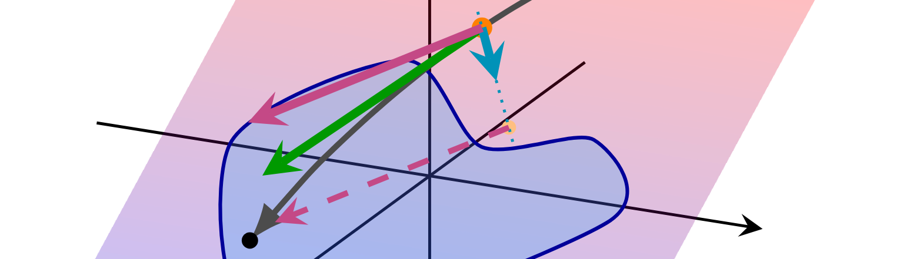
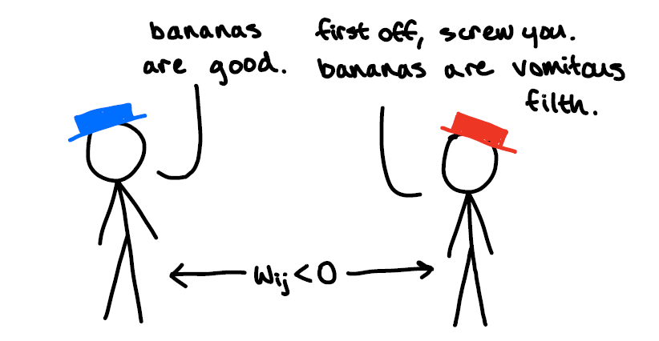
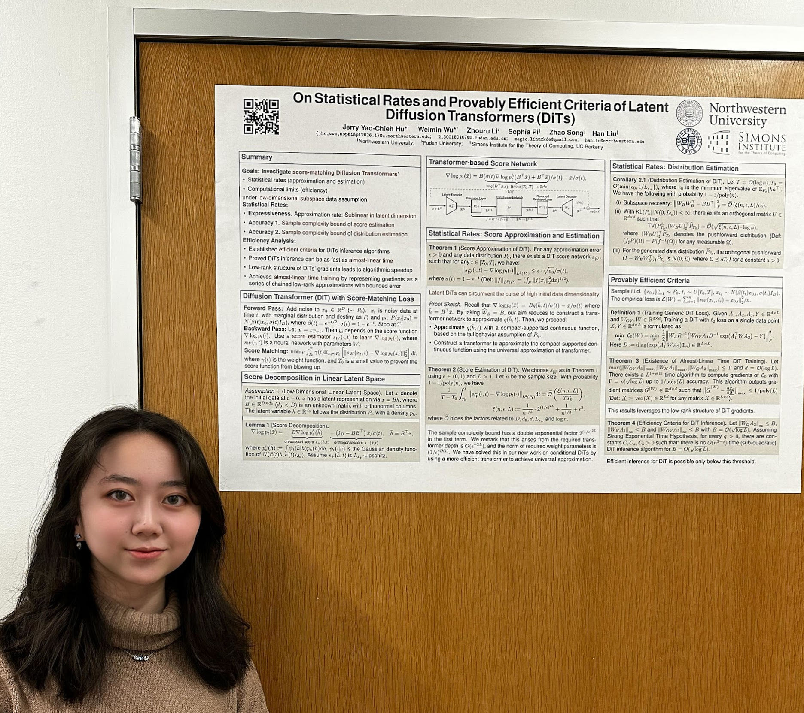
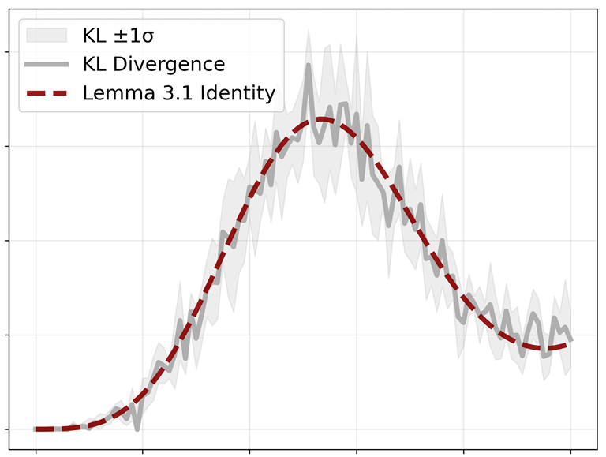
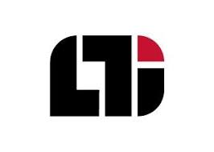
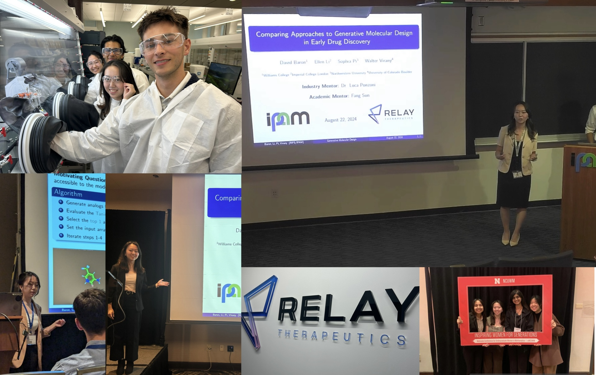
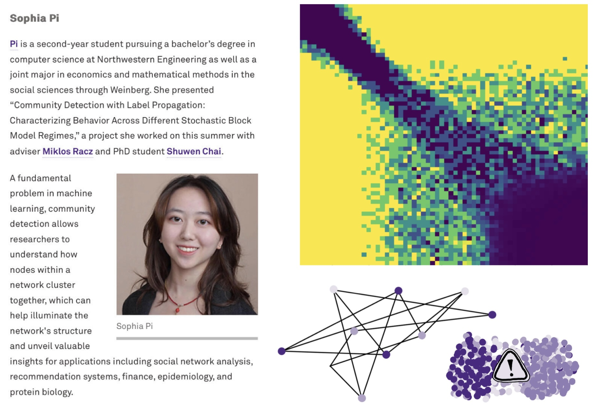
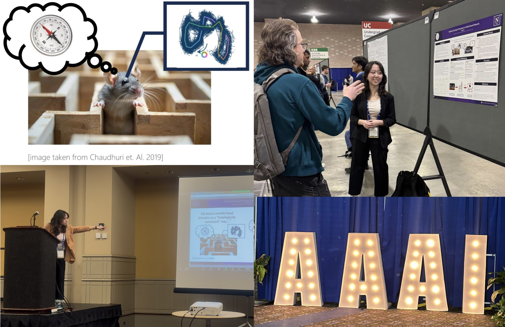
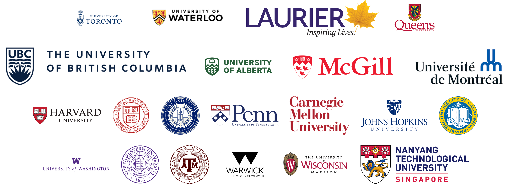
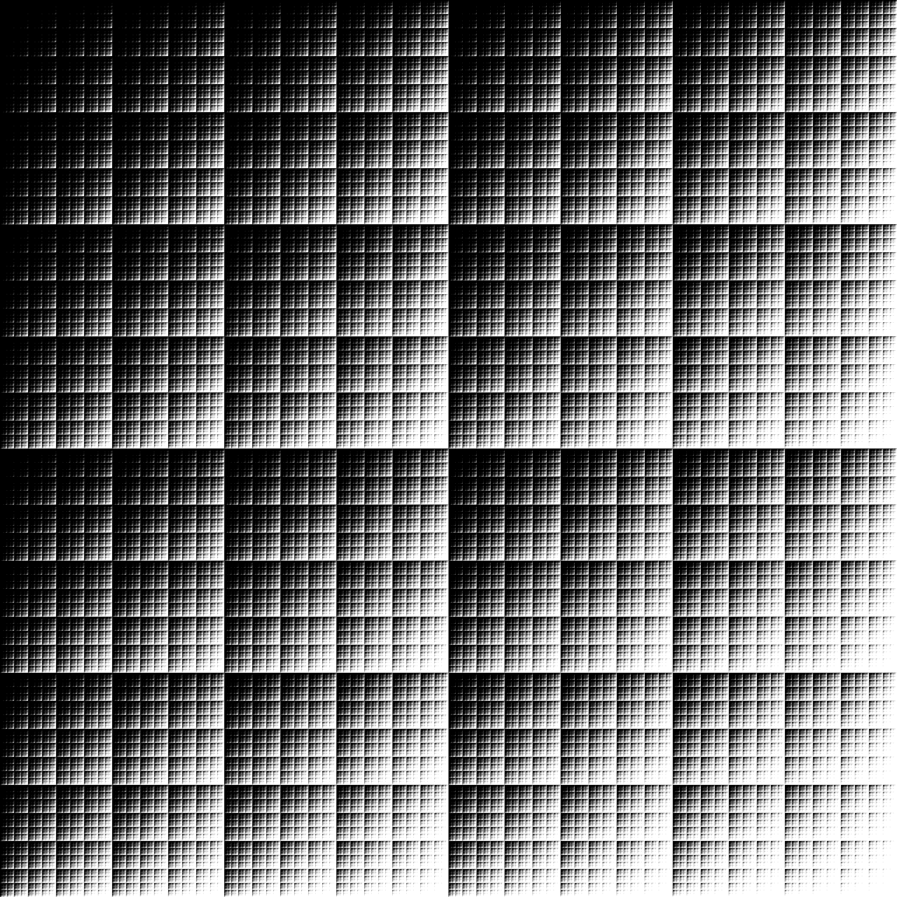

ICML 2026
Learning Manifold Data With Flow Matching
Escaping the curse of dimensionality via the manifold hypothesis, part II: electric boogaloo.
Read moreML researcher. Stick figure enthusiast. Serial sidequester. D1 yapper.
Hi! I'm a first-year PhD student in Computer and Information Science at the University of Pennsylvania, advised by Aaron Roth, Meena Jagadeesan, Michael Kearns, and Surbhi Goel. Prior to this, I did my undergrad in CS and MMSS at Northwestern, where I was very fortunate to work with and/or be advised by Ben Golub, Han Liu, and Miki Racz.
I am broadly interested in econ ML, multi-agent ecosystems, and trustworthy AI, though I have also worked on questions in network economics, statistical learning theory, and AI4Science, and am in general highly susceptible to falling down rabbit holes from whatever pops up on my Twitter feed.
I'm excited by (1) the pursuit of understanding the mathematical laws that govern how individuals, machines, and societies learn, behave, make mistakes, and evolve, and (2) building systems that improve the robustness and trustworthiness of socio-computational mechanisms.
2026
Moved to Philadelphia and started my PhD at Penn!
I graduated from Northwestern! Go 'Cats!
My MMSS thesis received a Distinguished Thesis award.
Our paper, “Learning Manifold Data With Flow Matching,” was accepted to ICML 2026!
I was recognized as one of the NU CS department's Outstanding Seniors for 2026, and McCormick ran a grad spotlight on me.
I'll be starting my PhD in Computer and Information Science at the University of Pennsylvania this fall. Excited to be heading to Philly!
2025
Our preprint, “On Flow Matching KL Divergence,” is now available on arXiv.
I started a summer research internship at Carnegie Mellon's Language Technologies Institute, working under Professor Graham Neubig.
I presented my research proposal, “Exploring Topological Properties of Artificial Neural Networks,” at AAAI 2025.
I presented my RIPS project, “Highlighting Limitations of Generative AI in Early Drug Discovery,” at NCUWM 2025.
I co-presented my RIPS project, “Highlighting Limitations of Generative AI in Early Drug Discovery,” at JMM 2025.
2024
I was awarded the Peter and Adrienne Barris Outstanding Peer Mentor Award by the NU CS Department for my work as a PM for CS 212 (Mathematical Foundations of Computer Science).
Our paper, “On Statistical Rates and Provably Efficient Criteria of Latent Diffusion Transformers (DiTs),” was accepted to NeurIPS 2024.
I started the RIPS (Research in Industrial Projects for Students) program at IPAM (Institute for Pure and Applied Mathematics), working with precision medicine company Relay Therapeutics.
Alpime Health, a healthtech startup I co-founded developing AI-integrated OCR systems to accelerate digital health systems in West Africa, won 1st place in the Life Sciences and Medical Innovations Track at VentureCat 2024.
My team's paper, “Feed-Forward Assisted Transformers for Time Efficient Fine-Tuning,” won 3rd place at U Toronto's annual ProjectX, the largest undergraduate ML competition in North America.
2023
My friend Mithra Karamchedu and I went on a sidequest about Hamming distances and ended up contributing two sequences (A365618 and A367055) to the OEIS (Online Encyclopedia of Integer Sequences).
I presented my summer research project, “Tighter Convergence Guarantees for the Label Propagation Algorithm on the 2-Community Stochastic Block Model,” at the NU CS Undergraduate Research Showcase.
I received the R&B Feldmann Fellowship to conduct summer research on random graphs, advised by Professor Miklos Racz.

ICML 2026
Escaping the curse of dimensionality via the manifold hypothesis, part II: electric boogaloo.
Read more
Senior thesis · still boondoggling…
The hitchhiker's guide to winning Twitter wars.
Read more
NeurIPS 2024
My cold plunge into statistical learning theory.
Read more
arXiv preprint
How well is my flow matching model actually learning? A numerical interlude.
Read more


R&B Feldmann Fellowship
When does copying your neighbor's opinions fail?
Read more
AAAI-25 Undergraduate Consortium
Ratatouille × Waymo crossover episode.
Read more
ProjectX 2024 · 3rd place
Why fine-tune the whole model when you can train a tiny network on top?
Read more